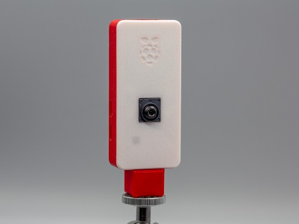
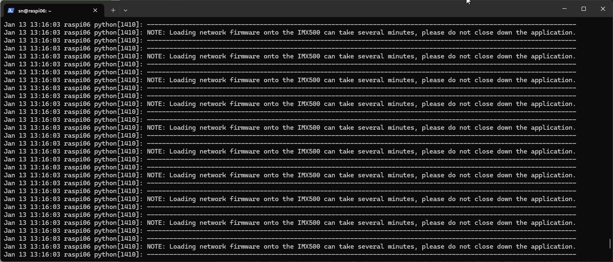
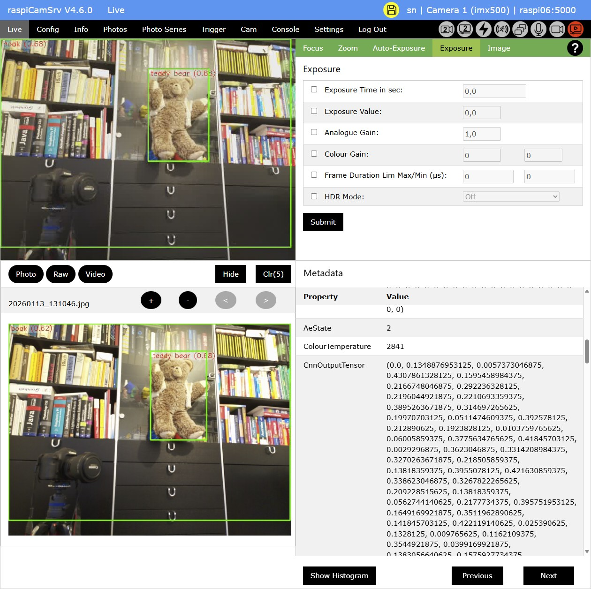

raspiCamSrv AI Camera Support

The Raspberry Pi AI Camera has an integrated AI accelerator which can process Input Tensor data delivered by the camera ISP directly within the camera system.
Output Tensor data with inference information are delivered to the Raspberry Pi host system in the context of image meta data.
Therefore, the main computational effort for the neural network is on the camera system while the host system is left with analysis and visualization of inference from the meta data.
This makes it possible to see Neural Networks at work even on low cost system such as Raspberry Pi Zero 2 (See Raspberry Models lower 5 and Raspberry Pi Zero).
raspiCamSrv from V4.6 supports AI features for the imx500 on the basis of published neural network models which are deployed together with the imx500-all package and for which Picamera2 provides demo implemetations.
These implementations have been integrated in raspiCamSrv with minor modifications for visualization on different camera streams.
NOTE: Currently, Visualization of inference data always scales to the Stream Size and does not consider cropping. Therefore you should avoid zoom and pan.
Installation
All required packages are installed with the automatic installer if you confirm to use the AI Camera.
Update from previous raspiCamSrv Versions
If you update from a previous raspiCamSrv version (V4.5 and earlier), you can just run the automatic installer again.
It will recognize components which are already installed and only install new components or update existing ones to the latest version.
Activation
If an imx500 camera is connected to one of the CSI ports, this will be recognized by the raspiCamSrv Flask server at startup and is shown in the Info/Cameras dialog.
By default, the imx500 camera is handled like a normal CSI camera.
To activate Camera AI support, you need to check Use Camera AI in the Settings dialog.
Neural Network Configuration
If Use Camera AI is activated, the Config menu will show an additional submenu AI Configuration
Here you can choose a Task to be executed by the model and, subsequently, one of the models which implements the chosen task.
In addition, you can choose a set of parameters which allow restricting detections by specific threshold values or by number.
By default, inference results are visualized on the lores camera stream which is usually used for the Live View.
If you need this visualization also on photos and/or videos, you need to activate visualization on the main stream.
NOTE For Fotos and Videos, the Stream Size for the main stream should be set to values similar to those of the lores stream.
The reson is that currently text sizes and line width of the visualization do not scale with the stream size.
Enabling a Neural Network
Once the configuration is done, you can enable the selected network model in the AI Configuration dialog.
Now, when the camera is started, the network model will be loaded onto the camera system.
This may take a while, depending on the platform used.
In order to avoid irritations about long camera startup times, raspiCamSrv shows an animation when the camera is started until the first frame is delevered by the camera.
Recommendations
The current implementation of imx500 AI support is initial and not all combinations of network models and other configuration settings have been tested.
The following recommendations may serve as a starting point for gaining experience with this subject.
Configuration Settings
It is recommended setting the Stream Size for Photo and Video to the same low value as for the Live View (e.g. 640 x 480).
This assures better representation of inference results on photos and videos, if these are activated.
Buffer Count should be set to 12, which is also used by the Picamera2 demo implemetations
Neural Network Models
The following models have been successfully tested within raspiCamSrv
| Task | Model |
|---|---|
| Classification | imx500_network_mobilenet_v2.rpk |
| Object Detection | imx500_network_ssd_mobilenetv2_fpnlite_320x320_pp.rpk |
| Pose Estimation | imx500_network_higherhrnet_coco.rpk |
| Segmentation | imx500_network_deeplabv3plus.rpk |
Parameter Settings
For performance reasons, you should enable Draw Results on Stream main only if needed for photos and videos.
If you do not see any results, you may need to:
- Decrease Detection Threshold
If performance is low, for example on a Raspberry Pi Zero, you may need to:
- Increase Detection Threshold in order to reduce the number of detections to be handled.
Raspberry Models 4 and lower and Raspberry Pi Zero
For these models, the lores stream needs to be in YUV format according to te Picamera2 Manual ch. 4.2.
The YUV format is not supported by all AI postprocessing pipelines.
It is, therefore, recommended using the following Configuration settingss for all use cases except Raw Photo, :
- Buffer Count: 12
- Sensor Mode: Custom
- Stream: main
- Stream Size: 640 x 480
- Stream Format: XBGR8888
For AI Configuration:
- Disable: Draw Results on Stream lores
- Enable: Draw Results on Stream main
Case for Raspberry Pi Zero 2
The official case for the Raspberry Pi Zero models is not suitable for the AI Camera.
As alternatives, there are 3D-printed cases, e.g. Case for Raspberry Pi Zero Models with Camera:

System Journal at Camera Startup
Before the camera is actually started, Picamera2 issues a message to stdout with a hint about long starting times:

Depending on whether a model is initially loaded or whether a previously loaded model is replaced, there will be kernel messages accompanying the loading process:

Live Stream
Depending on the task of the neural network model, different types of visualizations will be used.
Resulting information is drawn on the individual frames in a pre_callback which is executed by Picamera2 before the frames are supplied to applications.
Classification

With the Classification task, the neural network will identify individual classes out of a set of about 1000 classes (see below)
When photos are taken, the Metadata include on the input and output tensors used by the neural network.
Object Detection

With the Object Detection task, the neural network will track and frame individual objects out of a set of about 1000 classes (see below)
Segmentation

With the Segmentation task, the neural network will track and mask individual objects.
The implementation in raspiCamSrv differs from the demo implementation, in which masks are burned on the GPU preview only.
These overlays are, therefore, not available in the lores and main streams used by raspiCamSrv for Live view and Photo/Video.
Since the inference rate of 19 of the neural network is significantly lower than the framerate (30), a larger part of frames is not processed by the neural network. To avoid flickering, overlays are cached and the last overlay is used for frames which have bypassed AI processing.
As a consequence, when photos are taken, there will be photos for which the Metadata do not show tensor information, although a mask is visible on the photo.
AI Camera as Second Camera
You can also use an AI camera as Second Camera or, on a Pi 5, you can work with two AI cameras.
AI configuration is treated like any other Camera Configuration.
This means that, in order to preserve any configuration changes for a camera switch, you need to apply the Save Active Camera Settings for Camera Switch button before you replace the active camera with another camera or before you switch cameras.
Classes
The following classes are used in tasks Classification and Object Detection:
"classes": {
"labels": [
"0:background",
"1:tench, Tinca tinca",
"2:goldfish, Carassius auratus",
"3:great white shark, white shark, man-eater, man-eating shark, Carcharodon carcharias",
"4:tiger shark, Galeocerdo cuvieri",
"5:hammerhead, hammerhead shark",
"6:electric ray, crampfish, numbfish, torpedo",
"7:stingray",
"8:cock",
"9:hen",
"10:ostrich, Struthio camelus",
"11:brambling, Fringilla montifringilla",
"12:goldfinch, Carduelis carduelis",
"13:house finch, linnet, Carpodacus mexicanus",
"14:junco, snowbird",
"15:indigo bunting, indigo finch, indigo bird, Passerina cyanea",
"16:robin, American robin, Turdus migratorius",
"17:bulbul",
"18:jay",
"19:magpie",
"20:chickadee",
"21:water ouzel, dipper",
"22:kite",
"23:bald eagle, American eagle, Haliaeetus leucocephalus",
"24:vulture",
"25:great grey owl, great gray owl, Strix nebulosa",
"26:European fire salamander, Salamandra salamandra",
"27:common newt, Triturus vulgaris",
"28:eft",
"29:spotted salamander, Ambystoma maculatum",
"30:axolotl, mud puppy, Ambystoma mexicanum",
"31:bullfrog, Rana catesbeiana",
"32:tree frog, tree-frog",
"33:tailed frog, bell toad, ribbed toad, tailed toad, Ascaphus trui",
"34:loggerhead, loggerhead turtle, Caretta caretta",
"35:leatherback turtle, leatherback, leathery turtle, Dermochelys coriacea",
"36:mud turtle",
"37:terrapin",
"38:box turtle, box tortoise",
"39:banded gecko",
"40:common iguana, iguana, Iguana iguana",
"41:American chameleon, anole, Anolis carolinensis",
"42:whiptail, whiptail lizard",
"43:agama",
"44:frilled lizard, Chlamydosaurus kingi",
"45:alligator lizard",
"46:Gila monster, Heloderma suspectum",
"47:green lizard, Lacerta viridis",
"48:African chameleon, Chamaeleo chamaeleon",
"49:Komodo dragon, Komodo lizard, dragon lizard, giant lizard, Varanus komodoensis",
"50:African crocodile, Nile crocodile, Crocodylus niloticus",
"51:American alligator, Alligator mississipiensis",
"52:triceratops",
"53:thunder snake, worm snake, Carphophis amoenus",
"54:ringneck snake, ring-necked snake, ring snake",
"55:hognose snake, puff adder, sand viper",
"56:green snake, grass snake",
"57:king snake, kingsnake",
"58:garter snake, grass snake",
"59:water snake",
"60:vine snake",
"61:night snake, Hypsiglena torquata",
"62:boa constrictor, Constrictor constrictor",
"63:rock python, rock snake, Python sebae",
"64:Indian cobra, Naja naja",
"65:green mamba",
"66:sea snake",
"67:horned viper, cerastes, sand viper, horned asp, Cerastes cornutus",
"68:diamondback, diamondback rattlesnake, Crotalus adamanteus",
"69:sidewinder, horned rattlesnake, Crotalus cerastes",
"70:trilobite",
"71:harvestman, daddy longlegs, Phalangium opilio",
"72:scorpion",
"73:black and gold garden spider, Argiope aurantia",
"74:barn spider, Araneus cavaticus",
"75:garden spider, Aranea diademata",
"76:black widow, Latrodectus mactans",
"77:tarantula",
"78:wolf spider, hunting spider",
"79:tick",
"80:centipede",
"81:black grouse",
"82:ptarmigan",
"83:ruffed grouse, partridge, Bonasa umbellus",
"84:prairie chicken, prairie grouse, prairie fowl",
"85:peacock",
"86:quail",
"87:partridge",
"88:African grey, African gray, Psittacus erithacus",
"89:macaw",
"90:sulphur-crested cockatoo, Kakatoe galerita, Cacatua galerita",
"91:lorikeet",
"92:coucal",
"93:bee eater",
"94:hornbill",
"95:hummingbird",
"96:jacamar",
"97:toucan",
"98:drake",
"99:red-breasted merganser, Mergus serrator",
"100:goose",
"101:black swan, Cygnus atratus",
"102:tusker",
"103:echidna, spiny anteater, anteater",
"104:platypus, duckbill, duckbilled platypus, duck-billed platypus, Ornithorhynchus anatinus",
"105:wallaby, brush kangaroo",
"106:koala, koala bear, kangaroo bear, native bear, Phascolarctos cinereus",
"107:wombat",
"108:jellyfish",
"109:sea anemone, anemone",
"110:brain coral",
"111:flatworm, platyhelminth",
"112:nematode, nematode worm, roundworm",
"113:conch",
"114:snail",
"115:slug",
"116:sea slug, nudibranch",
"117:chiton, coat-of-mail shell, sea cradle, polyplacophore",
"118:chambered nautilus, pearly nautilus, nautilus",
"119:Dungeness crab, Cancer magister",
"120:rock crab, Cancer irroratus",
"121:fiddler crab",
"122:king crab, Alaska crab, Alaskan king crab, Alaska king crab, Paralithodes camtschatica",
"123:American lobster, Northern lobster, Maine lobster, Homarus americanus",
"124:spiny lobster, langouste, rock lobster, crawfish, crayfish, sea crawfish",
"125:crayfish, crawfish, crawdad, crawdaddy",
"126:hermit crab",
"127:isopod",
"128:white stork, Ciconia ciconia",
"129:black stork, Ciconia nigra",
"130:spoonbill",
"131:flamingo",
"132:little blue heron, Egretta caerulea",
"133:American egret, great white heron, Egretta albus",
"134:bittern",
"135:crane",
"136:limpkin, Aramus pictus",
"137:European gallinule, Porphyrio porphyrio",
"138:American coot, marsh hen, mud hen, water hen, Fulica americana",
"139:bustard",
"140:ruddy turnstone, Arenaria interpres",
"141:red-backed sandpiper, dunlin, Erolia alpina",
"142:redshank, Tringa totanus",
"143:dowitcher",
"144:oystercatcher, oyster catcher",
"145:pelican",
"146:king penguin, Aptenodytes patagonica",
"147:albatross, mollymawk",
"148:grey whale, gray whale, devilfish, Eschrichtius gibbosus, Eschrichtius robustus",
"149:killer whale, killer, orca, grampus, sea wolf, Orcinus orca",
"150:dugong, Dugong dugon",
"151:sea lion",
"152:Chihuahua",
"153:Japanese spaniel",
"154:Maltese dog, Maltese terrier, Maltese",
"155:Pekinese, Pekingese, Peke",
"156:Shih-Tzu",
"157:Blenheim spaniel",
"158:papillon",
"159:toy terrier",
"160:Rhodesian ridgeback",
"161:Afghan hound, Afghan",
"162:basset, basset hound",
"163:beagle",
"164:bloodhound, sleuthhound",
"165:bluetick",
"166:black-and-tan coonhound",
"167:Walker hound, Walker foxhound",
"168:English foxhound",
"169:redbone",
"170:borzoi, Russian wolfhound",
"171:Irish wolfhound",
"172:Italian greyhound",
"173:whippet",
"174:Ibizan hound, Ibizan Podenco",
"175:Norwegian elkhound, elkhound",
"176:otterhound, otter hound",
"177:Saluki, gazelle hound",
"178:Scottish deerhound, deerhound",
"179:Weimaraner",
"180:Staffordshire bullterrier, Staffordshire bull terrier",
"181:American Staffordshire terrier, Staffordshire terrier, American pit bull terrier, pit bull terrier",
"182:Bedlington terrier",
"183:Border terrier",
"184:Kerry blue terrier",
"185:Irish terrier",
"186:Norfolk terrier",
"187:Norwich terrier",
"188:Yorkshire terrier",
"189:wire-haired fox terrier",
"190:Lakeland terrier",
"191:Sealyham terrier, Sealyham",
"192:Airedale, Airedale terrier",
"193:cairn, cairn terrier",
"194:Australian terrier",
"195:Dandie Dinmont, Dandie Dinmont terrier",
"196:Boston bull, Boston terrier",
"197:miniature schnauzer",
"198:giant schnauzer",
"199:standard schnauzer",
"200:Scotch terrier, Scottish terrier, Scottie",
"201:Tibetan terrier, chrysanthemum dog",
"202:silky terrier, Sydney silky",
"203:soft-coated wheaten terrier",
"204:West Highland white terrier",
"205:Lhasa, Lhasa apso",
"206:flat-coated retriever",
"207:curly-coated retriever",
"208:golden retriever",
"209:Labrador retriever",
"210:Chesapeake Bay retriever",
"211:German short-haired pointer",
"212:vizsla, Hungarian pointer",
"213:English setter",
"214:Irish setter, red setter",
"215:Gordon setter",
"216:Brittany spaniel",
"217:clumber, clumber spaniel",
"218:English springer, English springer spaniel",
"219:Welsh springer spaniel",
"220:cocker spaniel, English cocker spaniel, cocker",
"221:Sussex spaniel",
"222:Irish water spaniel",
"223:kuvasz",
"224:schipperke",
"225:groenendael",
"226:malinois",
"227:briard",
"228:kelpie",
"229:komondor",
"230:Old English sheepdog, bobtail",
"231:Shetland sheepdog, Shetland sheep dog, Shetland",
"232:collie",
"233:Border collie",
"234:Bouvier des Flandres, Bouviers des Flandres",
"235:Rottweiler",
"236:German shepherd, German shepherd dog, German police dog, alsatian",
"237:Doberman, Doberman pinscher",
"238:miniature pinscher",
"239:Greater Swiss Mountain dog",
"240:Bernese mountain dog",
"241:Appenzeller",
"242:EntleBucher",
"243:boxer",
"244:bull mastiff",
"245:Tibetan mastiff",
"246:French bulldog",
"247:Great Dane",
"248:Saint Bernard, St Bernard",
"249:Eskimo dog, husky",
"250:malamute, malemute, Alaskan malamute",
"251:Siberian husky",
"252:dalmatian, coach dog, carriage dog",
"253:affenpinscher, monkey pinscher, monkey dog",
"254:basenji",
"255:pug, pug-dog",
"256:Leonberg",
"257:Newfoundland, Newfoundland dog",
"258:Great Pyrenees",
"259:Samoyed, Samoyede",
"260:Pomeranian",
"261:chow, chow chow",
"262:keeshond",
"263:Brabancon griffon",
"264:Pembroke, Pembroke Welsh corgi",
"265:Cardigan, Cardigan Welsh corgi",
"266:toy poodle",
"267:miniature poodle",
"268:standard poodle",
"269:Mexican hairless",
"270:timber wolf, grey wolf, gray wolf, Canis lupus",
"271:white wolf, Arctic wolf, Canis lupus tundrarum",
"272:red wolf, maned wolf, Canis rufus, Canis niger",
"273:coyote, prairie wolf, brush wolf, Canis latrans",
"274:dingo, warrigal, warragal, Canis dingo",
"275:dhole, Cuon alpinus",
"276:African hunting dog, hyena dog, Cape hunting dog, Lycaon pictus",
"277:hyena, hyaena",
"278:red fox, Vulpes vulpes",
"279:kit fox, Vulpes macrotis",
"280:Arctic fox, white fox, Alopex lagopus",
"281:grey fox, gray fox, Urocyon cinereoargenteus",
"282:tabby, tabby cat",
"283:tiger cat",
"284:Persian cat",
"285:Siamese cat, Siamese",
"286:Egyptian cat",
"287:cougar, puma, catamount, mountain lion, painter, panther, Felis concolor",
"288:lynx, catamount",
"289:leopard, Panthera pardus",
"290:snow leopard, ounce, Panthera uncia",
"291:jaguar, panther, Panthera onca, Felis onca",
"292:lion, king of beasts, Panthera leo",
"293:tiger, Panthera tigris",
"294:cheetah, chetah, Acinonyx jubatus",
"295:brown bear, bruin, Ursus arctos",
"296:American black bear, black bear, Ursus americanus, Euarctos americanus",
"297:ice bear, polar bear, Ursus Maritimus, Thalarctos maritimus",
"298:sloth bear, Melursus ursinus, Ursus ursinus",
"299:mongoose",
"300:meerkat, mierkat",
"301:tiger beetle",
"302:ladybug, ladybeetle, lady beetle, ladybird, ladybird beetle",
"303:ground beetle, carabid beetle",
"304:long-horned beetle, longicorn, longicorn beetle",
"305:leaf beetle, chrysomelid",
"306:dung beetle",
"307:rhinoceros beetle",
"308:weevil",
"309:fly",
"310:bee",
"311:ant, emmet, pismire",
"312:grasshopper, hopper",
"313:cricket",
"314:walking stick, walkingstick, stick insect",
"315:cockroach, roach",
"316:mantis, mantid",
"317:cicada, cicala",
"318:leafhopper",
"319:lacewing, lacewing fly",
"320:dragonfly, darning needle, devil's darning needle, sewing needle, snake feeder, snake doctor, mosquito hawk, skeeter hawk",
"321:damselfly",
"322:admiral",
"323:ringlet, ringlet butterfly",
"324:monarch, monarch butterfly, milkweed butterfly, Danaus plexippus",
"325:cabbage butterfly",
"326:sulphur butterfly, sulfur butterfly",
"327:lycaenid, lycaenid butterfly",
"328:starfish, sea star",
"329:sea urchin",
"330:sea cucumber, holothurian",
"331:wood rabbit, cottontail, cottontail rabbit",
"332:hare",
"333:Angora, Angora rabbit",
"334:hamster",
"335:porcupine, hedgehog",
"336:fox squirrel, eastern fox squirrel, Sciurus niger",
"337:marmot",
"338:beaver",
"339:guinea pig, Cavia cobaya",
"340:sorrel",
"341:zebra",
"342:hog, pig, grunter, squealer, Sus scrofa",
"343:wild boar, boar, Sus scrofa",
"344:warthog",
"345:hippopotamus, hippo, river horse, Hippopotamus amphibius",
"346:ox",
"347:water buffalo, water ox, Asiatic buffalo, Bubalus bubalis",
"348:bison",
"349:ram, tup",
"350:bighorn, bighorn sheep, cimarron, Rocky Mountain bighorn, Rocky Mountain sheep, Ovis canadensis",
"351:ibex, Capra ibex",
"352:hartebeest",
"353:impala, Aepyceros melampus",
"354:gazelle",
"355:Arabian camel, dromedary, Camelus dromedarius",
"356:llama",
"357:weasel",
"358:mink",
"359:polecat, fitch, foulmart, foumart, Mustela putorius",
"360:black-footed ferret, ferret, Mustela nigripes",
"361:otter",
"362:skunk, polecat, wood pussy",
"363:badger",
"364:armadillo",
"365:three-toed sloth, ai, Bradypus tridactylus",
"366:orangutan, orang, orangutang, Pongo pygmaeus",
"367:gorilla, Gorilla gorilla",
"368:chimpanzee, chimp, Pan troglodytes",
"369:gibbon, Hylobates lar",
"370:siamang, Hylobates syndactylus, Symphalangus syndactylus",
"371:guenon, guenon monkey",
"372:patas, hussar monkey, Erythrocebus patas",
"373:baboon",
"374:macaque",
"375:langur",
"376:colobus, colobus monkey",
"377:proboscis monkey, Nasalis larvatus",
"378:marmoset",
"379:capuchin, ringtail, Cebus capucinus",
"380:howler monkey, howler",
"381:titi, titi monkey",
"382:spider monkey, Ateles geoffroyi",
"383:squirrel monkey, Saimiri sciureus",
"384:Madagascar cat, ring-tailed lemur, Lemur catta",
"385:indri, indris, Indri indri, Indri brevicaudatus",
"386:Indian elephant, Elephas maximus",
"387:African elephant, Loxodonta africana",
"388:lesser panda, red panda, panda, bear cat, cat bear, Ailurus fulgens",
"389:giant panda, panda, panda bear, coon bear, Ailuropoda melanoleuca",
"390:barracouta, snoek",
"391:eel",
"392:coho, cohoe, coho salmon, blue jack, silver salmon, Oncorhynchus kisutch",
"393:rock beauty, Holocanthus tricolor",
"394:anemone fish",
"395:sturgeon",
"396:gar, garfish, garpike, billfish, Lepisosteus osseus",
"397:lionfish",
"398:puffer, pufferfish, blowfish, globefish",
"399:abacus",
"400:abaya",
"401:academic gown, academic robe, judge's robe",
"402:accordion, piano accordion, squeeze box",
"403:acoustic guitar",
"404:aircraft carrier, carrier, flattop, attack aircraft carrier",
"405:airliner",
"406:airship, dirigible",
"407:altar",
"408:ambulance",
"409:amphibian, amphibious vehicle",
"410:analog clock",
"411:apiary, bee house",
"412:apron",
"413:ashcan, trash can, garbage can, wastebin, ash bin, ash-bin, ashbin, dustbin, trash barrel, trash bin",
"414:assault rifle, assault gun",
"415:backpack, back pack, knapsack, packsack, rucksack, haversack",
"416:bakery, bakeshop, bakehouse",
"417:balance beam, beam",
"418:balloon",
"419:ballpoint, ballpoint pen, ballpen, Biro",
"420:Band Aid",
"421:banjo",
"422:bannister, banister, balustrade, balusters, handrail",
"423:barbell",
"424:barber chair",
"425:barbershop",
"426:barn",
"427:barometer",
"428:barrel, cask",
"429:barrow, garden cart, lawn cart, wheelbarrow",
"430:baseball",
"431:basketball",
"432:bassinet",
"433:bassoon",
"434:bathing cap, swimming cap",
"435:bath towel",
"436:bathtub, bathing tub, bath, tub",
"437:beach wagon, station wagon, wagon, estate car, beach waggon, station waggon, waggon",
"438:beacon, lighthouse, beacon light, pharos",
"439:beaker",
"440:bearskin, busby, shako",
"441:beer bottle",
"442:beer glass",
"443:bell cote, bell cot",
"444:bib",
"445:bicycle-built-for-two, tandem bicycle, tandem",
"446:bikini, two-piece",
"447:binder, ring-binder",
"448:binoculars, field glasses, opera glasses",
"449:birdhouse",
"450:boathouse",
"451:bobsled, bobsleigh, bob",
"452:bolo tie, bolo, bola tie, bola",
"453:bonnet, poke bonnet",
"454:bookcase",
"455:bookshop, bookstore, bookstall",
"456:bottlecap",
"457:bow",
"458:bow tie, bow-tie, bowtie",
"459:brass, memorial tablet, plaque",
"460:brassiere, bra, bandeau",
"461:breakwater, groin, groyne, mole, bulwark, seawall, jetty",
"462:breastplate, aegis, egis",
"463:broom",
"464:bucket, pail",
"465:buckle",
"466:bulletproof vest",
"467:bullet train, bullet",
"468:butcher shop, meat market",
"469:cab, hack, taxi, taxicab",
"470:caldron, cauldron",
"471:candle, taper, wax light",
"472:cannon",
"473:canoe",
"474:can opener, tin opener",
"475:cardigan",
"476:car mirror",
"477:carousel, carrousel, merry-go-round, roundabout, whirligig",
"478:carpenter's kit, tool kit",
"479:carton",
"480:car wheel",
"481:cash machine, cash dispenser, automated teller machine, automatic teller machine, automated teller, automatic teller, ATM",
"482:cassette",
"483:cassette player",
"484:castle",
"485:catamaran",
"486:CD player",
"487:cello, violoncello",
"488:cellular telephone, cellular phone, cellphone, cell, mobile phone",
"489:chain",
"490:chainlink fence",
"491:chain mail, ring mail, mail, chain armor, chain armour, ring armor, ring armour",
"492:chain saw, chainsaw",
"493:chest",
"494:chiffonier, commode",
"495:chime, bell, gong",
"496:china cabinet, china closet",
"497:Christmas stocking",
"498:church, church building",
"499:cinema, movie theater, movie theatre, movie house, picture palace",
"500:cleaver, meat cleaver, chopper",
"501:cliff dwelling",
"502:cloak",
"503:clog, geta, patten, sabot",
"504:cocktail shaker",
"505:coffee mug",
"506:coffeepot",
"507:coil, spiral, volute, whorl, helix",
"508:combination lock",
"509:computer keyboard, keypad",
"510:confectionery, confectionary, candy store",
"511:container ship, containership, container vessel",
"512:convertible",
"513:corkscrew, bottle screw",
"514:cornet, horn, trumpet, trump",
"515:cowboy boot",
"516:cowboy hat, ten-gallon hat",
"517:cradle",
"518:crane",
"519:crash helmet",
"520:crate",
"521:crib, cot",
"522:Crock Pot",
"523:croquet ball",
"524:crutch",
"525:cuirass",
"526:dam, dike, dyke",
"527:desk",
"528:desktop computer",
"529:dial telephone, dial phone",
"530:diaper, nappy, napkin",
"531:digital clock",
"532:digital watch",
"533:dining table, board",
"534:dishrag, dishcloth",
"535:dishwasher, dish washer, dishwashing machine",
"536:disk brake, disc brake",
"537:dock, dockage, docking facility",
"538:dogsled, dog sled, dog sleigh",
"539:dome",
"540:doormat, welcome mat",
"541:drilling platform, offshore rig",
"542:drum, membranophone, tympan",
"543:drumstick",
"544:dumbbell",
"545:Dutch oven",
"546:electric fan, blower",
"547:electric guitar",
"548:electric locomotive",
"549:entertainment center",
"550:envelope",
"551:espresso maker",
"552:face powder",
"553:feather boa, boa",
"554:file, file cabinet, filing cabinet",
"555:fireboat",
"556:fire engine, fire truck",
"557:fire screen, fireguard",
"558:flagpole, flagstaff",
"559:flute, transverse flute",
"560:folding chair",
"561:football helmet",
"562:forklift",
"563:fountain",
"564:fountain pen",
"565:four-poster",
"566:freight car",
"567:French horn, horn",
"568:frying pan, frypan, skillet",
"569:fur coat",
"570:garbage truck, dustcart",
"571:gasmask, respirator, gas helmet",
"572:gas pump, gasoline pump, petrol pump, island dispenser",
"573:goblet",
"574:go-kart",
"575:golf ball",
"576:golfcart, golf cart",
"577:gondola",
"578:gong, tam-tam",
"579:gown",
"580:grand piano, grand",
"581:greenhouse, nursery, glasshouse",
"582:grille, radiator grille",
"583:grocery store, grocery, food market, market",
"584:guillotine",
"585:hair slide",
"586:hair spray",
"587:half track",
"588:hammer",
"589:hamper",
"590:hand blower, blow dryer, blow drier, hair dryer, hair drier",
"591:hand-held computer, hand-held microcomputer",
"592:handkerchief, hankie, hanky, hankey",
"593:hard disc, hard disk, fixed disk",
"594:harmonica, mouth organ, harp, mouth harp",
"595:harp",
"596:harvester, reaper",
"597:hatchet",
"598:holster",
"599:home theater, home theatre",
"600:honeycomb",
"601:hook, claw",
"602:hoopskirt, crinoline",
"603:horizontal bar, high bar",
"604:horse cart, horse-cart",
"605:hourglass",
"606:iPod",
"607:iron, smoothing iron",
"608:jack-o'-lantern",
"609:jean, blue jean, denim",
"610:jeep, landrover",
"611:jersey, T-shirt, tee shirt",
"612:jigsaw puzzle",
"613:jinrikisha, ricksha, rickshaw",
"614:joystick",
"615:kimono",
"616:knee pad",
"617:knot",
"618:lab coat, laboratory coat",
"619:ladle",
"620:lampshade, lamp shade",
"621:laptop, laptop computer",
"622:lawn mower, mower",
"623:lens cap, lens cover",
"624:letter opener, paper knife, paperknife",
"625:library",
"626:lifeboat",
"627:lighter, light, igniter, ignitor",
"628:limousine, limo",
"629:liner, ocean liner",
"630:lipstick, lip rouge",
"631:Loafer",
"632:lotion",
"633:loudspeaker, speaker, speaker unit, loudspeaker system, speaker system",
"634:loupe, jeweler's loupe",
"635:lumbermill, sawmill",
"636:magnetic compass",
"637:mailbag, postbag",
"638:mailbox, letter box",
"639:maillot",
"640:maillot, tank suit",
"641:manhole cover",
"642:maraca",
"643:marimba, xylophone",
"644:mask",
"645:matchstick",
"646:maypole",
"647:maze, labyrinth",
"648:measuring cup",
"649:medicine chest, medicine cabinet",
"650:megalith, megalithic structure",
"651:microphone, mike",
"652:microwave, microwave oven",
"653:military uniform",
"654:milk can",
"655:minibus",
"656:miniskirt, mini",
"657:minivan",
"658:missile",
"659:mitten",
"660:mixing bowl",
"661:mobile home, manufactured home",
"662:Model T",
"663:modem",
"664:monastery",
"665:monitor",
"666:moped",
"667:mortar",
"668:mortarboard",
"669:mosque",
"670:mosquito net",
"671:motor scooter, scooter",
"672:mountain bike, all-terrain bike, off-roader",
"673:mountain tent",
"674:mouse, computer mouse",
"675:mousetrap",
"676:moving van",
"677:muzzle",
"678:nail",
"679:neck brace",
"680:necklace",
"681:nipple",
"682:notebook, notebook computer",
"683:obelisk",
"684:oboe, hautboy, hautbois",
"685:ocarina, sweet potato",
"686:odometer, hodometer, mileometer, milometer",
"687:oil filter",
"688:organ, pipe organ",
"689:oscilloscope, scope, cathode-ray oscilloscope, CRO",
"690:overskirt",
"691:oxcart",
"692:oxygen mask",
"693:packet",
"694:paddle, boat paddle",
"695:paddlewheel, paddle wheel",
"696:padlock",
"697:paintbrush",
"698:pajama, pyjama, pj's, jammies",
"699:palace",
"700:panpipe, pandean pipe, syrinx",
"701:paper towel",
"702:parachute, chute",
"703:parallel bars, bars",
"704:park bench",
"705:parking meter",
"706:passenger car, coach, carriage",
"707:patio, terrace",
"708:pay-phone, pay-station",
"709:pedestal, plinth, footstall",
"710:pencil box, pencil case",
"711:pencil sharpener",
"712:perfume, essence",
"713:Petri dish",
"714:photocopier",
"715:pick, plectrum, plectron",
"716:pickelhaube",
"717:picket fence, paling",
"718:pickup, pickup truck",
"719:pier",
"720:piggy bank, penny bank",
"721:pill bottle",
"722:pillow",
"723:ping-pong ball",
"724:pinwheel",
"725:pirate, pirate ship",
"726:pitcher, ewer",
"727:plane, carpenter's plane, woodworking plane",
"728:planetarium",
"729:plastic bag",
"730:plate rack",
"731:plow, plough",
"732:plunger, plumber's helper",
"733:Polaroid camera, Polaroid Land camera",
"734:pole",
"735:police van, police wagon, paddy wagon, patrol wagon, wagon, black Maria",
"736:poncho",
"737:pool table, billiard table, snooker table",
"738:pop bottle, soda bottle",
"739:pot, flowerpot",
"740:potter's wheel",
"741:power drill",
"742:prayer rug, prayer mat",
"743:printer",
"744:prison, prison house",
"745:projectile, missile",
"746:projector",
"747:puck, hockey puck",
"748:punching bag, punch bag, punching ball, punchball",
"749:purse",
"750:quill, quill pen",
"751:quilt, comforter, comfort, puff",
"752:racer, race car, racing car",
"753:racket, racquet",
"754:radiator",
"755:radio, wireless",
"756:radio telescope, radio reflector",
"757:rain barrel",
"758:recreational vehicle, RV, R.V.",
"759:reel",
"760:reflex camera",
"761:refrigerator, icebox",
"762:remote control, remote",
"763:restaurant, eating house, eating place, eatery",
"764:revolver, six-gun, six-shooter",
"765:rifle",
"766:rocking chair, rocker",
"767:rotisserie",
"768:rubber eraser, rubber, pencil eraser",
"769:rugby ball",
"770:rule, ruler",
"771:running shoe",
"772:safe",
"773:safety pin",
"774:saltshaker, salt shaker",
"775:sandal",
"776:sarong",
"777:sax, saxophone",
"778:scabbard",
"779:scale, weighing machine",
"780:school bus",
"781:schooner",
"782:scoreboard",
"783:screen, CRT screen",
"784:screw",
"785:screwdriver",
"786:seat belt, seatbelt",
"787:sewing machine",
"788:shield, buckler",
"789:shoe shop, shoe-shop, shoe store",
"790:shoji",
"791:shopping basket",
"792:shopping cart",
"793:shovel",
"794:shower cap",
"795:shower curtain",
"796:ski",
"797:ski mask",
"798:sleeping bag",
"799:slide rule, slipstick",
"800:sliding door",
"801:slot, one-armed bandit",
"802:snorkel",
"803:snowmobile",
"804:snowplow, snowplough",
"805:soap dispenser",
"806:soccer ball",
"807:sock",
"808:solar dish, solar collector, solar furnace",
"809:sombrero",
"810:soup bowl",
"811:space bar",
"812:space heater",
"813:space shuttle",
"814:spatula",
"815:speedboat",
"816:spider web, spider's web",
"817:spindle",
"818:sports car, sport car",
"819:spotlight, spot",
"820:stage",
"821:steam locomotive",
"822:steel arch bridge",
"823:steel drum",
"824:stethoscope",
"825:stole",
"826:stone wall",
"827:stopwatch, stop watch",
"828:stove",
"829:strainer",
"830:streetcar, tram, tramcar, trolley, trolley car",
"831:stretcher",
"832:studio couch, day bed",
"833:stupa, tope",
"834:submarine, pigboat, sub, U-boat",
"835:suit, suit of clothes",
"836:sundial",
"837:sunglass",
"838:sunglasses, dark glasses, shades",
"839:sunscreen, sunblock, sun blocker",
"840:suspension bridge",
"841:swab, swob, mop",
"842:sweatshirt",
"843:swimming trunks, bathing trunks",
"844:swing",
"845:switch, electric switch, electrical switch",
"846:syringe",
"847:table lamp",
"848:tank, army tank, armored combat vehicle, armoured combat vehicle",
"849:tape player",
"850:teapot",
"851:teddy, teddy bear",
"852:television, television system",
"853:tennis ball",
"854:thatch, thatched roof",
"855:theater curtain, theatre curtain",
"856:thimble",
"857:thresher, thrasher, threshing machine",
"858:throne",
"859:tile roof",
"860:toaster",
"861:tobacco shop, tobacconist shop, tobacconist",
"862:toilet seat",
"863:torch",
"864:totem pole",
"865:tow truck, tow car, wrecker",
"866:toyshop",
"867:tractor",
"868:trailer truck, tractor trailer, trucking rig, rig, articulated lorry, semi",
"869:tray",
"870:trench coat",
"871:tricycle, trike, velocipede",
"872:trimaran",
"873:tripod",
"874:triumphal arch",
"875:trolleybus, trolley coach, trackless trolley",
"876:trombone",
"877:tub, vat",
"878:turnstile",
"879:typewriter keyboard",
"880:umbrella",
"881:unicycle, monocycle",
"882:upright, upright piano",
"883:vacuum, vacuum cleaner",
"884:vase",
"885:vault",
"886:velvet",
"887:vending machine",
"888:vestment",
"889:viaduct",
"890:violin, fiddle",
"891:volleyball",
"892:waffle iron",
"893:wall clock",
"894:wallet, billfold, notecase, pocketbook",
"895:wardrobe, closet, press",
"896:warplane, military plane",
"897:washbasin, handbasin, washbowl, lavabo, wash-hand basin",
"898:washer, automatic washer, washing machine",
"899:water bottle",
"900:water jug",
"901:water tower",
"902:whiskey jug",
"903:whistle",
"904:wig",
"905:window screen",
"906:window shade",
"907:Windsor tie",
"908:wine bottle",
"909:wing",
"910:wok",
"911:wooden spoon",
"912:wool, woolen, woollen",
"913:worm fence, snake fence, snake-rail fence, Virginia fence",
"914:wreck",
"915:yawl",
"916:yurt",
"917:web site, website, internet site, site",
"918:comic book",
"919:crossword puzzle, crossword",
"920:street sign",
"921:traffic light, traffic signal, stoplight",
"922:book jacket, dust cover, dust jacket, dust wrapper",
"923:menu",
"924:plate",
"925:guacamole",
"926:consomme",
"927:hot pot, hotpot",
"928:trifle",
"929:ice cream, icecream",
"930:ice lolly, lolly, lollipop, popsicle",
"931:French loaf",
"932:bagel, beigel",
"933:pretzel",
"934:cheeseburger",
"935:hotdog, hot dog, red hot",
"936:mashed potato",
"937:head cabbage",
"938:broccoli",
"939:cauliflower",
"940:zucchini, courgette",
"941:spaghetti squash",
"942:acorn squash",
"943:butternut squash",
"944:cucumber, cuke",
"945:artichoke, globe artichoke",
"946:bell pepper",
"947:cardoon",
"948:mushroom",
"949:Granny Smith",
"950:strawberry",
"951:orange",
"952:lemon",
"953:fig",
"954:pineapple, ananas",
"955:banana",
"956:jackfruit, jak, jack",
"957:custard apple",
"958:pomegranate",
"959:hay",
"960:carbonara",
"961:chocolate sauce, chocolate syrup",
"962:dough",
"963:meat loaf, meatloaf",
"964:pizza, pizza pie",
"965:potpie",
"966:burrito",
"967:red wine",
"968:espresso",
"969:cup",
"970:eggnog",
"971:alp",
"972:bubble",
"973:cliff, drop, drop-off",
"974:coral reef",
"975:geyser",
"976:lakeside, lakeshore",
"977:promontory, headland, head, foreland",
"978:sandbar, sand bar",
"979:seashore, coast, seacoast, sea-coast",
"980:valley, vale",
"981:volcano",
"982:ballplayer, baseball player",
"983:groom, bridegroom",
"984:scuba diver",
"985:rapeseed",
"986:daisy",
"987:yellow lady's slipper, yellow lady-slipper, Cypripedium calceolus, Cypripedium parviflorum",
"988:corn",
"989:acorn",
"990:hip, rose hip, rosehip",
"991:buckeye, horse chestnut, conker",
"992:coral fungus",
"993:agaric",
"994:gyromitra",
"995:stinkhorn, carrion fungus",
"996:earthstar",
"997:hen-of-the-woods, hen of the woods, Polyporus frondosus, Grifola frondosa",
"998:bolete",
"999:ear, spike, capitulum",
"1000:toilet tissue, toilet paper, bathroom tissue"
]
}